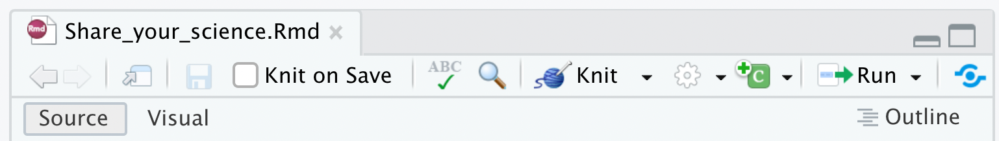

PART I - Instructions
For general instructions on installing R, RStudio and installing packages see the Quantitative Training Manual.
- Install the
Rmarkdownpackage and all dependencies. - Install
tinytex. In the past we have had some problems with this on PCs. If yourtinytexinstallation fails, what you might try is a package manager for Windows, i.e.ChocolateyorScoop. See here for details. You are unsuccessful at installingtinytexthat is okay, this package is only necessary to produce a .pdf output. You can complete your assignment as a .docx output or .html output.
Why use R markdown?
Integrate code and write-up to avoid mistakes moving between
.R(or other software) for analysis and.docxfor write-up.It is easier to find all your work when everything is in one file (or linked to from one file).
Run code in the background of your write-up so that if something changes the write-up automatically updates in all the relevant places. The reduces the chances of errors in your write-up.
Publish your work as a website. This facilitates hyper-linking, you can update your work at any time, avoiding emailing your work keeps email storage free, and your work can be easily shared (i.e., in conversation I might say ‘that analysis is linked off my faculty website’).
Include math symbols quickly because your hands don’t leave the keyboard to make selections from drop-down menus.
If your analysis is time-consuming you might not want the calculations in your write-up, slowing the compilation of your write-up. In this case you might have a separate
.Ranalysis file that outputs your results as a.csvor plot. You can read these in automatically to your write-up by specifying the path to the.csvor plot.
In
R Studio, selectFile > New Project... > R Markdown. Give the file a name, etc.The default
.Rmdopens already with some code to help you. With the default.Rmdopened, there should be aKnitbutton at the top and center of the Editor pane. Click theKnitbutton to knit to.pdf,.html, or.docxoutput. Alternatively, doCmd/Ctrl + Shift + K.

(If this did not work, perhaps you have not installed the rmarkdown or tinytex packages)
- Beside the
Knitbutton is an arrow. You have the option to knit to.pdf,.html, or.docxoutput. Try producing other outputs.
(For me, producing a .docx opened Skype (clearly a bug). This was fixed by using Finder (on my Mac) to find the .docx file that I made, and selecting Open With > Microsoft Word)
- Below are some things to try, that will help you to complete PART I. Type the code, then
Knitto see what happens.
Include variables in-text by enclosing in
$x$, i.e. this renders as \(x\), which is italicized to indicate in your writing that \(x\) is a variable rather than a letter.Load data using R commands. (If you want to do this quickly copy and paste the command at the end of this section)
Hide the code that loads the data in the output. i.e., read about the options for r code chunks:
echo,include,message,warning,eval, andresults. Print the data in your output. Show both the code and the output. Try it all!Show only your code print out. Can you do this?
## Psoil Pcorn
## 1 1 64
## 2 4 71
## 3 5 54
## 4 9 81
## 5 13 93
## 6 11 76Include code in-text as
`r x `. This renders as 80 because in a hidden coding block I loaded data and assignedx<-mean(data$Pcorn). Therefore, the reported value of \(x\) = 80 is the mean phosphorous in the soil for the data I loaded in the background. If the data change, the mean reported in this document will automatically change too.Make headings, subheadings, bold font, etc.
Make a hyperlink.
Use latex commands to include in-text equations, i.e.,
$y = \beta_0 + \beta_1 x$renders as \(y = \beta_0 + \beta_1 x\);$\frac{dy}{dt} = e^x$renders as \(\frac{dy}{dt} = e^x\). (You may need to typerequire(tinytex)in the Console to get this to work. `The website Detexify is fun for identifying latex commands for different symbols (Some advanced symbols may require packages that you haven’t installed and therfore won’t work)).Try some more complicated Latex.
data <- read.csv('https://raw.githubusercontent.com/ahurford/biol-4605-data/main/data/corn.csv', fill=TRUE)If you would like a more structured introduction to R Markdown you can read R Markdown: the definitive guide.
This R markdown cheat sheet is helpful.
Some more advanced skills you might learn are making alert boxes, or changing some of the options in the YAML. The alert boxes in this document are made as
div class="alert alert-info"between< >, then the text, and closed with/divbetween< >.My experience making tables in
.Rmdhas not been good. Usually, I make the table in.docx, print to.pdf, take a screenshot and import the.pngto.Rmdor.tex.
- For your PART I specifically, you need to make a figure in
ggplot. Forggplotyou need your data as a data frame. The code that I used in the example was:
age = seq(1,25)
difference = c(-20, -26, -24, -20, -22, -20, -10, 0,
20, 23, 9, 5, 12, 14, 16, 10, 8, 6, 7, 11, 5, 6, 4, 5, 10)
data = data.frame(age=age, difference = difference)As you can see, I have guessed the values in the plot and entered them manually. This is okay for the purposes of completing your assignment. (Extra for experts - try a package like scrapR or digitize).
- You need to install
ggplot2. You also need to load that package because we are going to use functions from it now (do this asrequire(ggplot2)). The code that I used to make myggplotwas:
g1=ggplot(data = data, aes(x = age, y = difference)) +
geom_point() +
geom_line() +
xlab("Adult Age, Days")+
ylab("Difference")
g1
If you need to add a title, you can add a layer + ggtitle("Your title), to control the axis limits, use + xlim(c(-10,10)) (with the values you need). Generally, you should be able to use an internet search to find what you need. You can also read more about ggplot here.
To make your figure caption, just type below where your figure prints. To get bold text, use ** bold text ** (but without space between the ** and the text).
The last thing we need is to take a screenshot of the figure you are trying to reproduce, and to include it as a figure. I like to put all my figures in a folder named figure. You can read about including a figure that is a
.pngor other format. Of the options, I find using knitr::include_graphics() within a code chunk best because it seems easier to control the figure size. The code that I used in my example of how I completed PART I was:

Now you have all the information you need to complete PART I, you just need to put the pieces together. If you are stuck, ask me or a classmate.